Dilshan Udara
IT Undergraduate at SLIIT City Uni & IT Support Specialist
This learning portfolio documents my growth, learning outcomes, and reflections throughout the Professional Skills (IT1215) module. It blends my technical foundation in software and troubleshooting with critical interpersonal competencies, framed around my deep interest in astronomy.
Module Overview (IT1215)
Understanding the foundation of Professional Skills
Credits & Level
Level 2, Semester 2 module at SLIIT Academy. Earns 2 Credit Points, delivering essential workforce readiness skills.
Aim & Core Focus
Facilitates a deep understanding of professional, communicative, and employability skills necessary for real-world IT careers.
Learning Outcomes
Spans 10 key outcomes including CV formulation, interview techniques, negotiation, leadership, ethics, and emotional intelligence.
Professional Profile & CV
Combining IT support experience with software development skills
About Me
I am a second-year Information Technology undergraduate student at SLIIT City Uni. Through my work experience as an IT Support Assistant at Arpico SuperCenter, I've developed practical expertise in hardware troubleshooting, software configuration, system administration, and first-line support.
My approach to IT combines logical problem solving with continuous learning. My interest in astronomy and astrophysics reflects my analytical, inquisitive, and self-directed learning mindset.
Core Skills
Technical & Web Development
IT Support & Operations
Work Experience
IT Support Assistant
Arpico SuperCenter, Katugasthota
Provided first-line IT support for office staff and store systems. Assisted in setting up new workstations, installing OS, maintaining software, and troubleshooting basic network connectivity.
Education
Higher Diploma in Information Technology
SLIIT City Uni
Currently in 2nd year. Gaining depth in software development, networks, databases, and professional skills.
Diploma in Information Technology
Esoft Metro Campus, Kandy
Laid the groundwork for core IT infrastructure, programming logic, and systems support.
G.C.E. Advanced Level
St. Mary’s College, Kegalle
English Medium education with physics and mathematics foundations.
Featured Individual Projects
GGDy – Dy Gaming Store
A modern, responsive e-commerce web platform for gaming products. Integrates catalog browsing, custom cart logic, database storage, and a user login system.
Proxima Squad Stats Bot
A specialized Discord bot for gaming servers. Tracks active user gaming sessions, voice channel durations, manual focus hours, and provides statistics dashboards.
Lecture Reflections
Click on any lecture card to view core materials, worksheets, and my personal learning reflections
Group Project: "Tech-Fusion 2026"
Bridging the technology access gap at WP/NG Dharmashoka Maha Vidyalaya
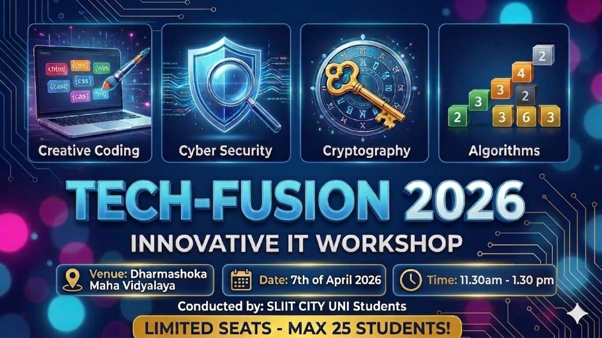
Group 13 Team Photo at WP/NG Dharmashoka Maha Vidyalaya
Venue
WP/NG Dharmashoka Maha Vidyalaya
Date
April 7th, 2026
Dilshan's Role
Teaching Assistant, Setup, & Media Coordinator
Team Size
Group 13 (12 Members)
The Mission & Context
Dharmashoka Maha Vidyalaya had a severe technology access gap: their IT laboratory contained only a single functioning desktop computer, approximately 15 years old. The vast majority of the 25 student participants had no computer access at home.
To solve this, Group 13 implemented a Self-Sustained Mobile Tech Lab model. Every member brought their personal laptops to setup a temporary 12-workstation classroom. The team leader acted as the main lecturer, while the other 11 members (including myself) worked one-on-one with students as TAs to write code.
We taught basic programming structures (HTML5 tag styling, CSS3 layout design, and logical cipher setups). To ensure continuous learning, we provided color-printed handbooks for offline reference and curated QR codes for coding videos.
Dilshan's Reflections
"As an IT support assistant, setting up a 12-device technical lab in a classroom with no network or infrastructure was a great test of my technical readiness. I routed power, configured offline coding directories, and verified settings on all devices."
" mentoring students who had never touched a PC before was deeply moving. It challenged me to drop technical terms and explain how tag nests work using simple analogies. I also acted as the media coordinator, taking photos and videos to document our progress."
Financial Management & Budget Allocation
To fund this community service project, each of the 12 members contributed LKR 1,500. Through sponsorships from Leo Club and SLIIT Marketing, the team saved costs on printing and transport. These savings were reallocated to buy LKR 11,955 worth of essential office and stationery supplies (A4 paper packs, pens, white-board markers, whiteboard markers, staplers) for the school office.
Initial Proposal Budget Plan
| Category | Description | Cost (LKR) |
|---|---|---|
| Printing & Stationery | Master Tutes, Forms, Cipher Wheels | 5,000 |
| Transport | Round-trip PickMe/Uber travel for team | 3,500 |
| Mobile Data | Workstation backup files download | 1,000 |
| Donation Item | School office supplies donation | 7,000 |
| Student Treats | Chocolates/snacks for quiz prizes | 1,500 |
| Contingency | 10% emergency buffer | 1,800 |
| TOTAL BUDGET | 19,800 | |
Actual Expenditures Report
| Category | Details | Spent (LKR) |
|---|---|---|
| Education Materials | 25 Student Handbooks (Color pages) | 3,250 |
| Donation Items | A4 paper packs, pens, whiteboard markers, etc. | 11,955 |
| Student Treats | Gifts for quiz winners, chocolates | 1,850 |
| Decoration Materials | Bristol boards, glitter sheets, logos | 1,500 |
| TOTAL SPENT | 18,555 | |
Team Responsibility Matrix (Group 13)
| Name | Reg. No | Core Responsibilities |
|---|---|---|
| M.I.R. Munasinghe | SA24610110 | Team Leader, Resource Allocation, Main Host of the event |
| T.M.D.U.N Thennakoon | SA24610394 | Workstation Setup, Teaching Assistant (T.A.), Media Coordinator |
| R.G.S. Nadeesha | SA24610728 | Teaching Assistant, Decorations, Stationery assembly |
| T.H. Nandula Hansa Dinu | IT21704598 | Workstation setup, resource coordination, T.A. |
| D.M.O.T. Caldera | SA24610745 | Teaching Assistant, Decorations, Logistics |
| A.M.A.P. Atapattu | SA24101589 | Teaching Assistant, Decorations, Logistics |
| W.M.D. Oshadha | SA24610523 | Workstation setup, teaching assistant, decorations |
| U.D.P.S. Chanuka | SA24610516 | Workstation setup, teaching assistant, decorations |
| P.H.G.M.T. Bandara | SA24610447 | Workstation setup, teaching assistant, decorations |
| R.N.T. Jaywardhana | SA24610665 | Lesson coordinator, purchase coordinator, T.A. |
| S.G. Kavishka | SA24610422 | Workstation setup, teaching assistant, decorations |
| L.A.T. Anujitha | SA24610384 | Workstation setup, teaching assistant, decorations |
Full Project Completion Report
Flip through the 14-page formal project completion report. Click on the page image to enlarge and view it in high resolution.

Project Gallery
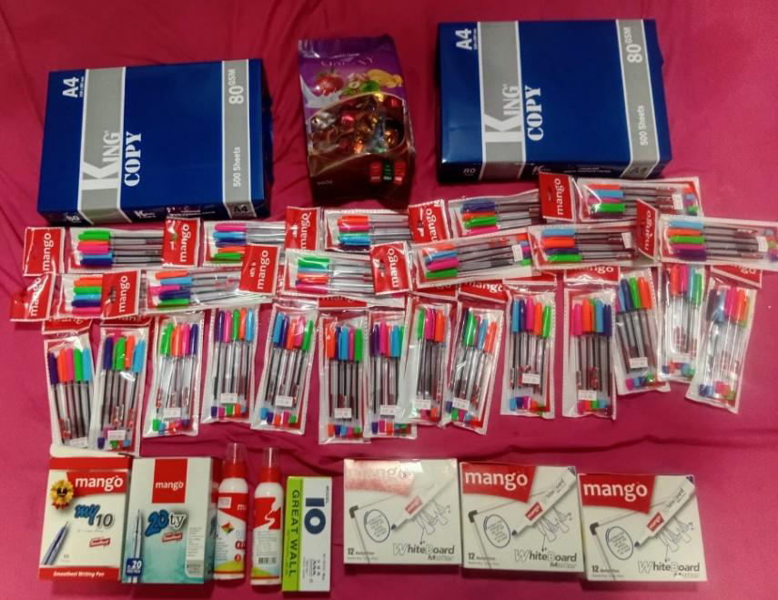
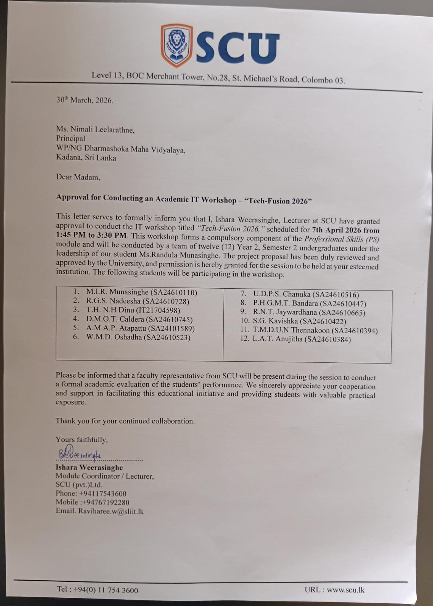
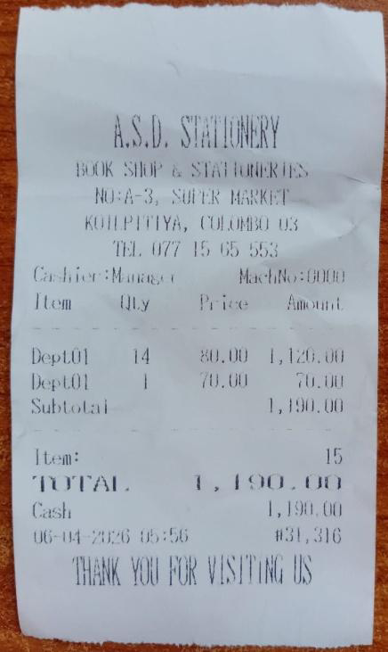
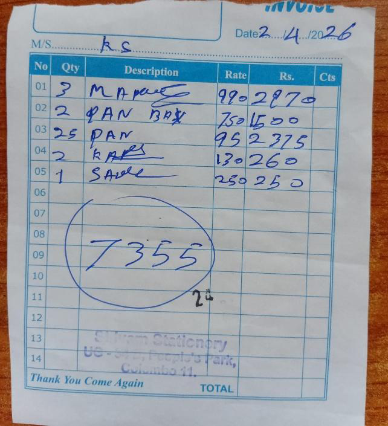
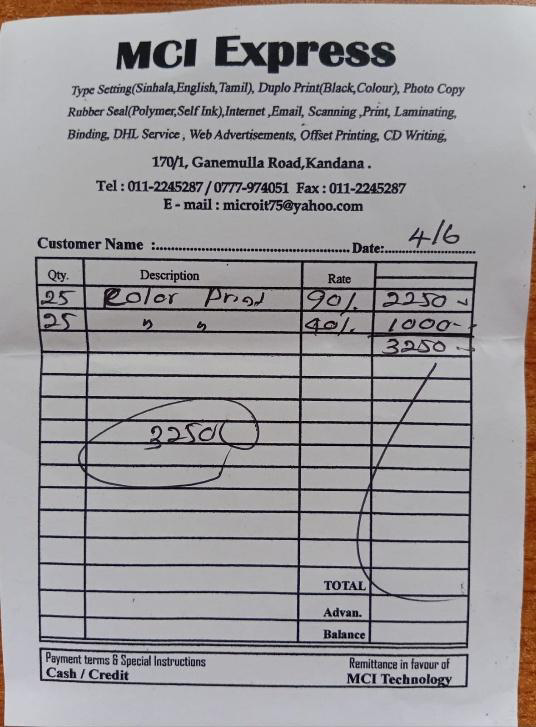
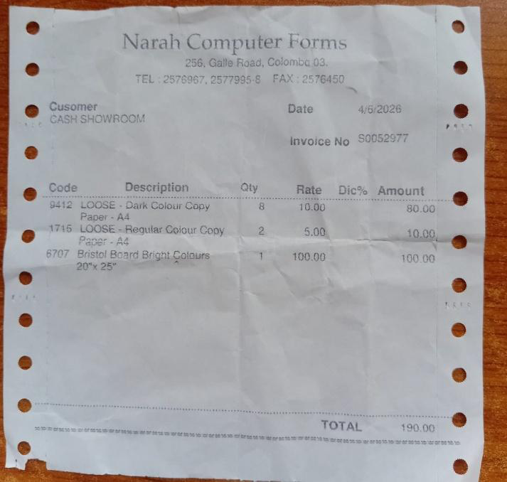
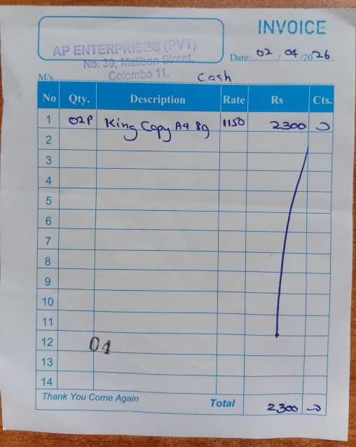
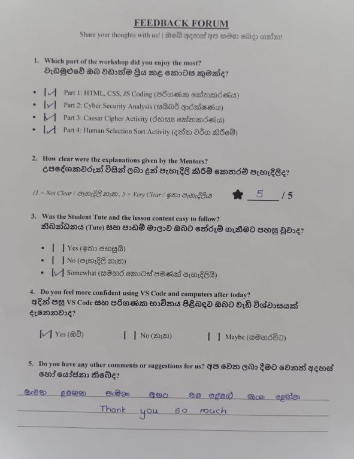
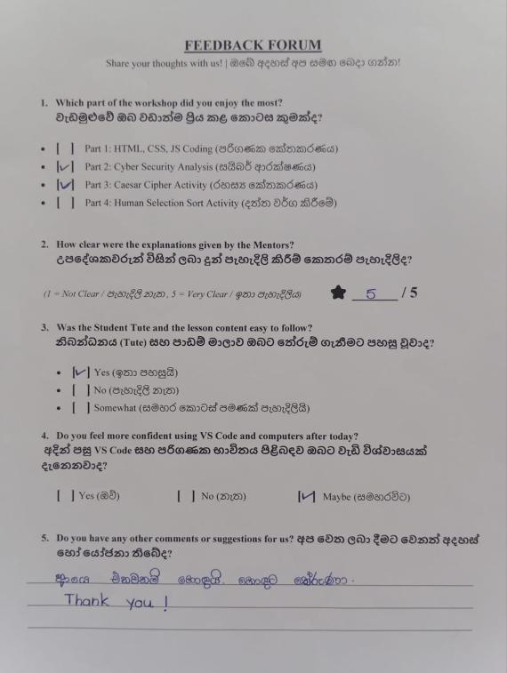
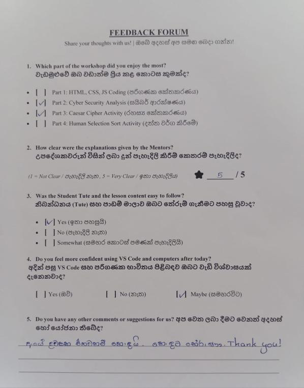
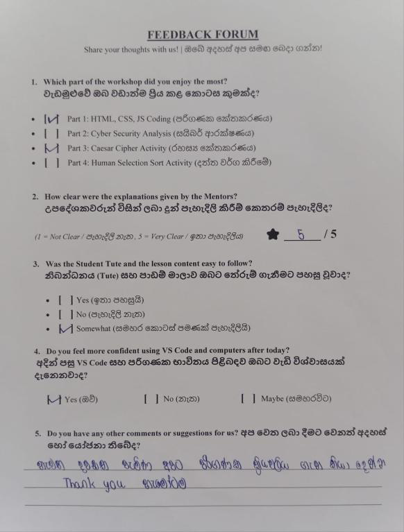
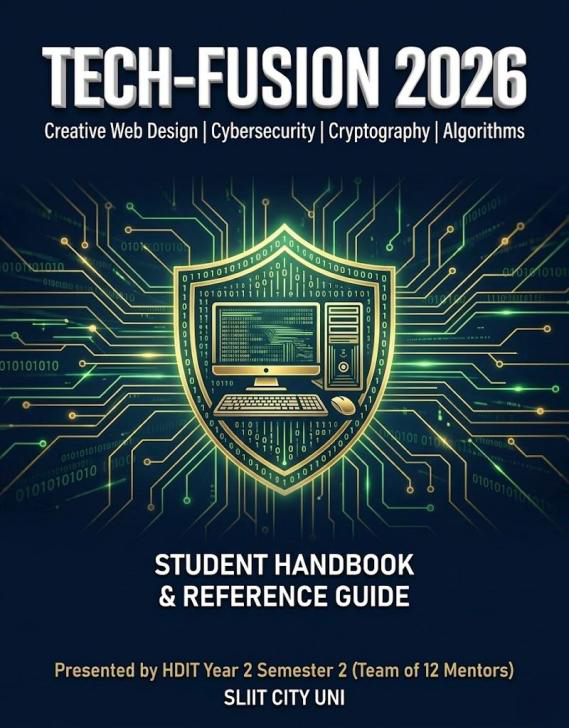
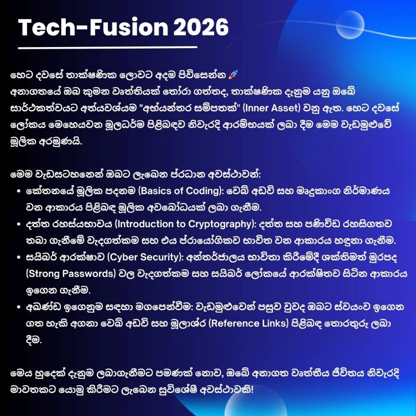
Interactive Workbench
Test your professional competencies with these interactive utilities
Interactive Johari Window
Explore self-awareness by selecting adjectives to plot details in the four quadrants of the Johari Window.
Select 5-8 Adjectives:
Personal SWOT Dashboard
Hover or click on the quadrants below to view Dilshan Udara's SWOT analysis and strategic planning details.
- Strong hardware/software diagnostic capabilities.
- Proven IT Support experience at Arpico SuperCenter.
- Deep interest in astronomy, cultivating logical reasoning.
- Self-directed learner (programming and gaming tools).
- Limited experience with enterprise cloud deployments.
- Beginner in professional German language skills.
- Public speaking confidence in massive formal settings.
- Sometimes gets overly absorbed in technical troubleshooting details.
- Securing an internship in DevOps or Systems Administration.
- Completing Higher Diploma at SLIIT to transition to BSc.
- Leveraging Python/Discord stats project to gain automation roles.
- Expanding networks through SLIIT IT societies.
- Highly competitive market for entry-level IT roles.
- Rapid evolution of AI tools altering entry-level support scopes.
- Balancing academic workload at SLIIT with support roles.
Interview Skills Simulator
Practice common interview questions. Select a question, review the strategy, draft your response, and compare it with the professional answer key.
Select a Question:
Select a question from the list to start the simulation.
IT Code of Ethics Scenario Quiz
Read through actual professional IT situations and make decisions that align with code of ethics guidelines.
Minutes of Meeting (MoM) Generator
Generate formal agendas and minutes of meetings according to structural standards taught in Lecture 7.
Meeting Details:
MoM Output Document:
Your generated document will appear here...
Contact Information
Reach out for internships, project collaborations, or IT queries
Connect with Me
Feel free to reach out via any of the channels below. I'm currently looking for internships and entry-level IT support or web development opportunities.